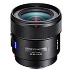
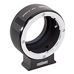
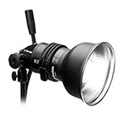
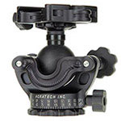

Cameras
Here's a photography gear guide of my favorite cameras all the way from pro DSLR and mirrorless compact system cameras to point -n-shoots pastic cameras you'll find em all here..
Lenses
Here's my favorite glass from wide angle to super -telephoto with everything my favorite day to day lenses to specially use exotic glass.

Lense Adapters
Here's a round up of lnese adapters for mounting canon. Nikon, leica and other legacy lenses on sony e-mount cameras including full-frames sony a7,a7r,a7s, mirrorless cameras.

Lighting
There are the strobes ,flashes and continuous lights we use from profoto, elinchrom,sony,flashpoint,wescott,lowell and more.

camera support
Camera support to keep your camera steady ot move it smoothly including tripods and support from induro, 3leggedthing, benro, acratech, steadiacam and more.
